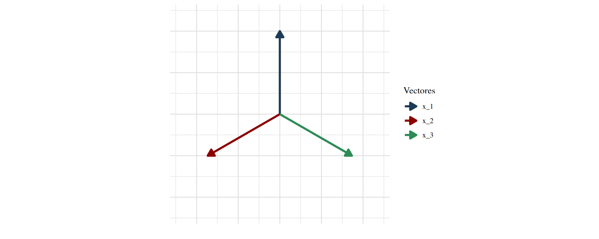
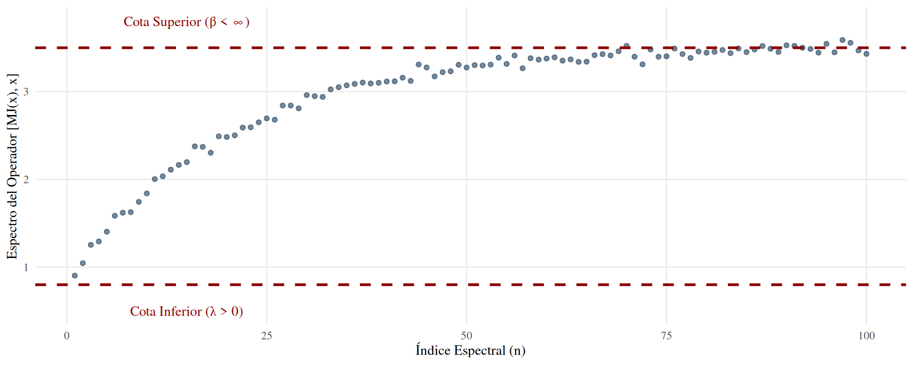

Representación del Cono Isotrópico (Métrica Indefinida)
Bimarcos en Espacios con Métrica Indefinida
Encuentro Internacional de Matemáticas (EIMAT)
Universidad del Atlántico 
2026-11-12
1. De los Espacios de Hilbert a la Métrica Indefinida
El análisis funcional clásico se cimenta en la geometría de los espacios de Hilbert, donde el producto interno induce una métrica definida positiva. Sin embargo, diversos problemas físicos y matemáticos exigen relajar esta condición geométrica.
- Espacio con producto interno indefinido: Un espacio vectorial complejo \(\mathcal{K}\) equipado con una forma sesquilineal hermítica \([\cdot, \cdot]\) que no necesariamente satisface \([x,x] > 0\) para \(x \neq 0\)[cite: 53].
- Los vectores se clasifican geométricamente en función de su norma cuadrada isotrópica:
- Positivos: \([x,x] > 0\)
- Negativos: \([x,x] < 0\)
- Neutros (Isotrópicos): \([x,x] = 0\) con \(x \neq 0\)
Estructura del Espacio de Krein
Para establecer un marco topológico completo sobre una métrica indefinida, se requiere una descomposición ortogonal estructurada.
Definición (Espacio de Krein): Un espacio vectorial \(\mathcal{K}\) con producto interno indefinido \([\cdot, \cdot]\) es un espacio de Krein si admite una descomposición en suma directa ortogonal[cite: 59]: \[ \mathcal{K} = \mathcal{K}^{+} [+] \mathcal{K}^{-} \] donde \((\mathcal{K}^{+}, [\cdot, \cdot])\) y \((\mathcal{K}^{-}, -[\cdot, \cdot])\) son espacios de Hilbert de manera independiente.
- El símbolo \([+]\) denota que la suma directa es ortogonal respecto al producto interno indefinido \([\cdot, \cdot]\)[cite: 59].
- A esta descomposición se le asocian los proyectores ortogonales \(P^{+}\) y \(P^{-}\) sobre \(\mathcal{K}^{+}\) y \(\mathcal{K}^{-}\) respectivamente.
La Simetría Fundamental \(\mathcal{J}\)
La topología de un espacio de Krein se estabiliza a través de un operador clave que vincula la métrica indefinida con una métrica de Hilbert subyacente[cite: 59, 60].
Se define el operador de simetría fundamental \(\mathcal{J} : \mathcal{K} \rightarrow \mathcal{K}\) como: \[ \mathcal{J} = P^{+} - P^{-} \]
Propiedades Algebraicas Claves:
- Involutiva: \(\mathcal{J}^2 = I\) (El operador identidad).
- Autoadjunta: \([\mathcal{J}x, y] = [x, \mathcal{J}y]\).
- Isometría: \([\mathcal{J}x, \mathcal{J}y] = [x, y]\).
El \(\mathcal{J}\)-Producto Interno y Topología
A partir de la simetría fundamental, se induce un producto interno definido positivo, dotando al espacio de una estructura de Hilbert fuerte[cite: 60].
El \(\mathcal{J}\)-producto interno: Para todo \(x, y \in \mathcal{K}\), se define[cite: 60]: \[ [x, y]_{\mathcal{J}} := [\mathcal{J}x, y] \]
- Norma inducida: La norma asociada a este producto interno es \(||x||_{\mathcal{J}} = \sqrt{[x,x]_{\mathcal{J}}}\)[cite: 60].
- Equivalencia Topológica: Aunque un espacio de Krein admite múltiples descomposiciones (y por ende, múltiples simetrías \(\mathcal{J}_1, \mathcal{J}_2\)), las normas inducidas \(||\cdot||_{\mathcal{J}_1}\) y \(||\cdot||_{\mathcal{J}_2}\) son topológicamente equivalentes.
Identidad de Polarización
En el estudio de bimarcos, la reconstrucción de señales requiere mapear operadores a través de formas sesquilineales acotadas[cite: 55]. El puente algebraico fundamental es la Identidad de Polarización generalizada.
Teorema (Identidad de Polarización): Si \((\mathcal{K}, [\cdot, \cdot])\) es un espacio con producto interno indefinido, para cualesquiera \(x, y \in \mathcal{K}\) se cumple[cite: 54]: \[[x,y] = \frac{1}{4} \sum_{k=0}^{3} i^k [x+i^k y, x+i^k y]\] \[ = \frac{1}{4} [x+y, x+y] - \frac{1}{4} [x-y, x-y] + \frac{i}{4} [x+iy, x+iy] - \frac{i}{4} [x-iy, x-iy] \]
Ejemplo Geométrico: \(\mathcal{K} = \mathbb{C}^2\)
Considérese el espacio modelo \(\mathcal{K} = \mathbb{C}^2\) equipado con el producto interno indefinido[cite: 60]: \[[(a,b),(c,d)] := a\bar{c} - b\bar{d}\]
Descomposición fundamental[cite: 60]: * \(\mathcal{K}^{+} = \{(x,0) \mid x \in \mathbb{C}\}\) * \(\mathcal{K}^{-} = \{(0,y) \mid y \in \mathbb{C}\}\)
La simetría fundamental opera como \(\mathcal{J}(x,y) = (x,-y)\), lo que induce el producto definido positivo \([(a,b),(c,d)]_{\mathcal{J}} = a\bar{c} + b\bar{d}\)[cite: 60].
Representación Visual del Cono Isotrópico
Visualización tridimensional de la estructura métrica, aislando las componentes positivas y negativas separadas por el cono isotrópico (vectores de longitud cero).
2. Teoría de Marcos: Antecedentes Clásicos
La teoría de marcos (frames) fue introducida por Duffin y Schaeffer en 1952 para el estudio de series de Fourier no armónicas, y posteriormente expandida por Daubechies en el análisis de wavelets[cite: 52].
A diferencia de una base ortonormal, un marco permite redundancia (sobrecompletitud), garantizando una reconstrucción numéricamente estable de las señales, incluso en presencia de ruido o pérdida de coeficientes.

Representación conceptual de sobrecompletitud (Marco de Mercedes-Benz en R²)
Marcos en Espacios de Krein
En esta sección se establece una definición formal de marcos en espacios de Krein, extendiendo las condiciones geométricas del espacio de Hilbert asociado[cite: 57].
Definición 3.1 (Marco en \(\mathcal{K}\)): Sea \((\mathcal{K}=\mathcal{K}^{+}[+]\mathcal{K}^{-},[\cdot,\cdot])\) un espacio de Krein con simetría fundamental \(\mathcal{J}\)[cite: 59]. Una sucesión \(\{x_{n}\}_{n\in\mathbb{N}}\subset\mathcal{K}\) se llama un marco de \(\mathcal{K}\) si existen constantes \(\alpha, \beta > 0\) tales que para todo \(x\in\mathcal{K}\)[cite: 59]:
\[ \alpha||x||_{\mathcal{J}}^{2}\le\sum_{n\in\mathbb{N}}|[x,x_{n}]|^{2}\le\beta||x||_{\mathcal{J}}^{2} \]
- Las constantes \(\alpha\) y \(\beta\) se denominan cotas inferior y superior del marco, respectivamente.
- Si \(\alpha = \beta\), el marco se denomina ajustado.
Reescritura bajo la Métrica Indefinida
A diferencia del módulo al cuadrado clásico en espacios de Hilbert, en un espacio con producto interno indefinido la magnitud compleja requiere un tratamiento algebraico específico.
Nótese que por las propiedades de la forma sesquilineal hermítica, se cumple que[cite: 60]: \[ |[x,x_{n}]|^{2}=[x,x_{n}][x_{n},x] \]
Por consiguiente, la condición de estabilidad que define al marco se reescribe de manera rigurosa como[cite: 60]:
\[ \alpha||x||_{\mathcal{J}}^{2}\le\sum_{n\in\mathbb{N}}[x,x_{n}][x_{n},x]\le\beta||x||_{\mathcal{J}}^{2}, \quad \forall x\in\mathcal{K} \]
Correspondencia Topológica Fundamental
El andamiaje topológico permite vincular directamente las estructuras de la métrica indefinida con el espacio de Hilbert estándar.
- Existe una correspondencia uno a uno entre los marcos en el espacio de Krein y los marcos en el espacio de Hilbert asociado[cite: 57].
- Toda sucesión \(\{x_n\}_{n \in \mathbb{N}}\) que sea un marco en \((\mathcal{K}, [\cdot, \cdot])\) es también un marco en \((\mathcal{K}, [\cdot, \cdot]_{\mathcal{J}})\), y viceversa, compartiendo las mismas cotas \(\alpha\) y \(\beta\).
Este isomorfismo garantiza que los operadores pre-marco y marco hereden las propiedades de acotación y convergencia incondicional requeridas para la reconstrucción exacta[cite: 57].
3. Bimarcos en Espacios con Métrica Indefinida
La restricción de emplear una única sucesión \(\{x_n\}_{n\in\mathbb{N}}\) limita la flexibilidad geométrica requerida en ciertos problemas de reconstrucción. La generalización natural consiste en desacoplar el producto \([k,x_{n}][x_{n},k]\) utilizando dos sucesiones distintas[cite: 60].
Definición 3.2 (Bi-\(\mathcal{J}\)-marco): Sean \((\mathcal{K}=\mathcal{K}^{+}[+]\mathcal{K}^{-},[\cdot,\cdot],\mathcal{J})\) un espacio de Krein y \((\mathcal{X},\mathcal{Y})=(\{x_{n}\}_{n\in\mathbb{N}},\{y_{n}\}_{n\in\mathbb{N}})\subset\mathcal{K}\times\mathcal{K}\)[cite: 60]. Si existen constantes \(\alpha, \beta > 0\) tales que para todo \(k\in\mathcal{K}\)[cite: 60]:
\[ \alpha||k||_{\mathcal{J}}^{2}\le\sum_{n\in\mathbb{N}}[k,x_{n}][y_{n},k]\le\beta||k||_{\mathcal{J}}^{2} \]
entonces se dice que \((\mathcal{X}, \mathcal{Y})\) es un \(\mathcal{J}\)-bimarco para \(\mathcal{K}\)[cite: 60].
- Además, si se cumple utilizando el \(\mathcal{J}\)-producto interno directamente, se dice que es un bimarco para el espacio de Hilbert asociado \((\mathcal{K},[\cdot,\cdot]_{\mathcal{J}})\)[cite: 60].
Justificación Geométrica: El Caso \(\mathbb{C}^2\)
¿Existen sucesiones que formen un bimarco sin ser marcos individualmente? Se demuestra afirmativamente mediante un contraejemplo en \(\mathcal{K} = \mathbb{C}^2\) con el producto interno \([(a,b),(c,d)] = a\bar{c} - b\bar{d}\)[cite: 60].
Se definen las sucesiones \(\mathcal{X}\) y \(\mathcal{Y}\) para \(k\in\mathbb{N}\) como[cite: 61]: \[x_{4k-3}=e_{1}, \quad x_{4k-2}=\frac{1}{k^{2}}e_{1}, \quad x_{4k-1}=e_{2}, \quad x_{4k}=\frac{1}{k^{2}}e_{2}\] \[y_{4k-3}=\frac{1}{k^{2}}e_{1}, \quad y_{4k-2}=e_{1}, \quad y_{4k-1}=\frac{1}{k^{2}}e_{2}, \quad y_{4k}=e_{2}\]
Para \(z_0 = e_1\), la sucesión \(\mathcal{X}\) diverge[cite: 61]: \[ \sum_{n\in\mathbb{N}}|[z_{0},x_{n}]|^{2} = \sum_{k\in\mathbb{N}}\left(1+\frac{1}{k^{4}}\right) = +\infty \] Por lo tanto, \(\mathcal{X}\) (y de forma análoga \(\mathcal{Y}\)) no admiten una cota superior \(\beta\), por ende, no son \(\mathcal{J}\)-marcos[cite: 61, 62].
Estabilización Conjunta en \(\mathbb{C}^2\)
Al operar el par \((\mathcal{X}, \mathcal{Y})\) bajo el producto cruzado del bimarco, los coeficientes se compensan mutuamente. Para cualquier \(z \in \mathbb{C}^2\), se obtiene[cite: 62]:
\[ \sum_{n\in\mathbb{N}}[z,x_{n}][y_{n},z] = (|z_1|^2 + |z_2|^2) \sum_{k\in\mathbb{N}}\frac{2}{k^{2}} = \frac{\pi^2}{3}(|z_1|^2 + |z_2|^2) \]
Dado que \(||z||_{\mathcal{J}}^{2} = |z_1|^2 + |z_2|^2\), se concluye geométricamente que[cite: 62]: \[ 3||z||_{\mathcal{J}}^{2} \le \sum_{n\in\mathbb{N}}[x_{n},z][z,y_{n}] \le 4||z||_{\mathcal{J}}^{2} \]
El par \((\mathcal{X}, \mathcal{Y})\) constituye un \(\mathcal{J}\)-bimarco con cotas \(\alpha=3\) y \(\beta=4\), a pesar de la divergencia individual[cite: 62].
Suma de Marcos mediante Bimarcos
En espacios de Hilbert, la suma de dos marcos no necesariamente constituye un nuevo marco. La teoría de bimarcos proporciona las condiciones suficientes para garantizar la estabilidad de estas sumas en espacios de Krein[cite: 62].
Proposición 3.4: Si \(\mathcal{X}=\{x_{n}\}_{n\in\mathbb{N}}\) y \(\mathcal{Z}=\{z_{n}\}_{n\in\mathbb{N}}\) son \(\mathcal{J}\)-marcos para \(\mathcal{K}\), y el par \((\mathcal{X},\mathcal{Z})\) conforma un \(\mathcal{J}\)-bimarco, entonces la sucesión suma \(\mathcal{X}+\mathcal{Z}\) es también un \(\mathcal{J}\)-marco para el espacio \(\mathcal{K}\)[cite: 62].
- Esquema de demostración: Se fundamenta en la expansión del cuadrado de la norma, donde los términos cruzados \([x_n, z][z, z_n]\) quedan acotados precisamente por las constantes del \(\mathcal{J}\)-bimarco \(e\) y \(f\)[cite: 63].
Equivalencia Estructural bajo \(\mathcal{J}\)
La simetría fundamental transfiere intacta la topología de los bimarcos al espacio de Hilbert asociado, facilitando su manipulación.
Proposición 3.7: Sean \(\mathcal{X}\) y \(\mathcal{Y}\) sucesiones en un espacio de Krein \(\mathcal{K}\). Las siguientes condiciones son equivalentes[cite: 65]: 1. \((\mathcal{X},\mathcal{Y})\) es un \(\mathcal{J}\)-bimarco para el espacio de Krein \((\mathcal{K}, [\cdot,\cdot])\)[cite: 65]. 2. \((\mathcal{J}\mathcal{X}, \mathcal{J}\mathcal{Y})\) es un bimarco para el espacio de Hilbert \((\mathcal{K}, [\cdot,\cdot]_{\mathcal{J}})\)[cite: 65].
- La demostración exige el uso riguroso de la involución \(\mathcal{J}(\mathcal{J}(x)) = x\) y la conservación isométrica \(||x||_{\mathcal{J}} = ||\mathcal{J}(x)||_{\mathcal{J}}\)[cite: 65, 66].
El Operador \(\mathcal{J}\)-Bimarco
Para abordar el problema de reconstrucción algorítmica de señales, se introduce el operador núcleo de la teoría. Se define primeramente la forma sesquilineal \(\psi\) asociada al bimarco[cite: 67]:
\[ \psi(x,y)=\sum_{n\in\mathbb{N}}[x,x_{n}]_{\mathcal{J}}[y_{n},y]_{\mathcal{J}} \]
Mediante el Teorema de Representación de Riesz, se garantiza la existencia de un único operador acotado \(T\) tal que \([T(x),y]_{\mathcal{J}}=\psi(x,y)\)[cite: 72, 73]. A partir de este, se establece el operador fundamental:
Definición (Operador \(\mathcal{J}\)-bimarco): Se define el operador \(\mathcal{M}:\mathcal{K}\rightarrow\mathcal{K}\) como \(\mathcal{M}=\mathcal{J}T\mathcal{J}\), cuya forma explícita está dada por[cite: 73]: \[ \mathcal{M}(x) = \sum_{n\in\mathbb{N}}[x,x_{n}]\mathcal{J}(y_{n}) \]
Visualización del Condicionamiento del Operador
El condicionamiento del operador (relación entre sus cotas \(\lambda\) y \(\beta\)) determina la estabilidad numérica de la reconstrucción de la señal en el espacio de Krein.

Condicionamiento Espectral del Operador J-bimarco
Invertibilidad y Reconstrucción
El objetivo final de todo marco es reconstruir un elemento arbitrario del espacio. Para ello, el operador marco asociado debe ser invertible.
Teorema de Invertibilidad: Si \((\mathcal{X}, \mathcal{Y})\) es un \(\mathcal{J}\)-bimarco con cotas \(\lambda, \beta > 0\), entonces su operador asociado satisface[cite: 74, 75]: \[ \lambda I \le \mathcal{M}\mathcal{J} \le \beta I \] y por consiguiente, \(\mathcal{M}\) es un operador continuo e invertible sobre \(\mathcal{K}\)[cite: 76].
- Demostración (Esquema): La relación de acotamiento implica que \([(I - \beta^{-1}\mathcal{M}\mathcal{J})(k), k]_{\mathcal{J}} \ge 0\)[cite: 76].
- Mediante el cálculo del supremo en la esfera unitaria, la norma satisface \(||I - \beta^{-1}\mathcal{M}\mathcal{J}||_{\mathcal{J}} \le 1 - \frac{\lambda}{\beta} < 1\)[cite: 77].
- Por el Teorema de Neumann, la serie converge, garantizando la existencia del operador inverso[cite: 77].